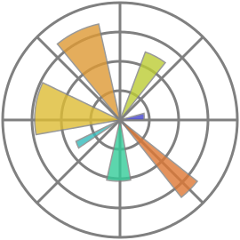
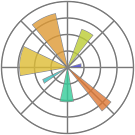

Hey there, I'm Shyamal! I'm currently pursuing my Master's in Computer Science at St. Anthony's College in Shillong, and I'm passionate about all things tech-related. I've got experience in various programming languages, including Python and C++, and I've recently completed a project related to web monitoring. The project involved web scraping, sentiment analysis, and visual design to monitor and analyze data from different websites. I also have experience using Blender, a 3D graphics software, to create visual representations of data. When I'm not working on projects, you can find me exploring new technologies, tinkering with gadgets, or binging on my favorite TV shows (with the occasional ice cream break, of course). Thanks for stopping by my portfolio, and don't hesitate to reach out if you want to chat tech, collaborate on a project, or just shoot the breeze. I'm always up for meeting new people and exploring new possibilities.


 
